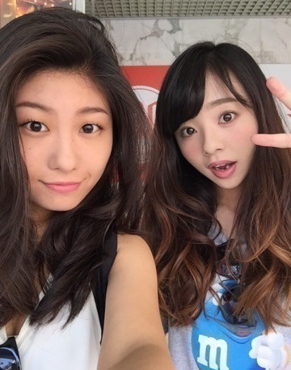
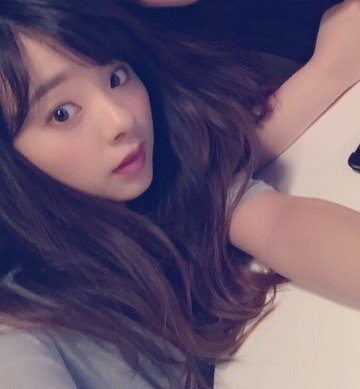
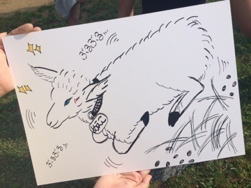

おつかれさまです（ ´▽｀）♡
まにだよ？ ろってぃーだよ？
ルヒカまに。

ルヒカ皆分かるかなぁ？
椿のCMで『独り言花』歌ってた子だよ.＊
一つ歳下♡
最近,時間合って少しお茶したよ♡
久々会えて嬉しかったぁ(#^.^#)
はい！最初に告知します！！
【ケータイ大喜利】
今夜23時半～,NHK総合
すっごい楽しい収録でした！沢山笑いました！
後ろの黒板の落書きにも注目してみてね...♡笑
チェックよろしくお願いします♡
【乃木坂ゴルフ倶楽部】
楽天SHOWTIMEにて，今月から新番組が始まることになりました！！ 月2回配信予定で初回は7/24です！もうすぐねーー♡ ゲストはTIMさんです！命命命
毎回ゴルフ好きな方をゲストとしてお招きして
一緒にコースを回ったりしながらゴルフの魅力をお伝えしていく番組です！
皆頑張ってるので，チェックよろしくお願いします⊂((・x・))⊃
そしてそして...,
前回,七瀬がお祝いやゆーて,会計済ませてくれてたぁ（ ; ; ）♡って話して，何のお祝いかはまだ言えなかったんだけど,情報解禁になったから言うね。。
色々話してる中で途中アンダーの話になって，『まひろフロントになったの。』ってことを言ったら七瀬が喜んでくれたの。 嬉しかったなぁぁ。 ありがとう。
フロントメンバーとして,自分に求められてるものをちゃんとできる様,精一杯頑張ります。
皆さん,よろしくお願いします♡♡♡

後々，『のぎ天』最終回が放送されました.＊
最終回，色々活躍できて良かったです！
勝負事全て勝利しました♡笑ノへへへ
ばんざーいばんざーいヾ(＠⌒ー⌒＠)ノ
何故か皆に拍手をもらいました♡

羊のめえこ。可愛いでしょ♡笑
のぎ天には本当に感謝してます。
色々書くときりがないので書かないけど，，のぎ天らぶ。。 ありがとうございました！！！
また更新します！